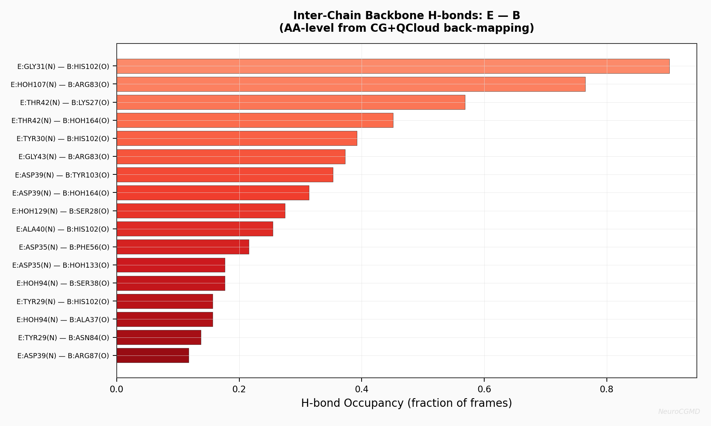
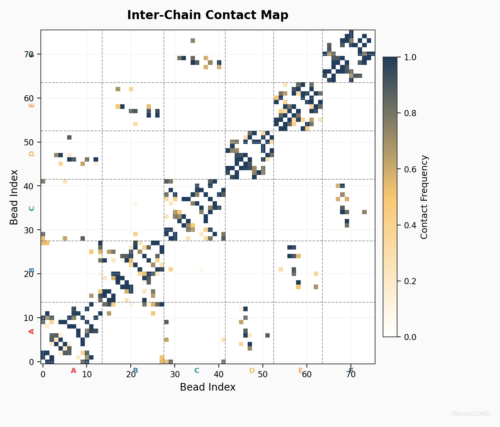

Tutorial: Barnase-Barstar Binding
Complete walkthrough — crystal structure to publication-ready binding analysis.
▶ SYSTEM OVERVIEW — PDB: 1BRS — canonical protein-protein binding
Barnase (A,B,C)
110 residues each
RNase enzyme, the inhibited partner.
Barstar (D,E,F)
89 residues each
Barnase inhibitor, the binding partner.
CG Mapping
4640 atoms → 76 beads
6 entities, 3 biological pairs: D-A, E-B, F-C.
step 1: configure
▶ CONFIGURATION — eval_stride=50: full QCloud+ML every 50 steps, ~1000 steps/min
[system]
name = "barnase_barstar"
pdb_source = "benchmarks/reference_cases/data/1BRS.pdb"
output_dir = "outputs/barnase_barstar_2ns"
[dynamics]
stages = ["nvt", "npt", "production"]
[dynamics.nvt]
steps = 5000
time_step = 0.02
temperature = 300.0
ensemble = "NVT"
[dynamics.npt]
steps = 5000
time_step = 0.02
temperature = 300.0
ensemble = "NPT"
[dynamics.production]
steps = 100000
time_step = 0.02
temperature = 300.0
eval_stride = 50step 2: run
▶ RUN
neurocgmd run examples/barnase_20ns.tomlImport PDB → NVT → NPT → production (QCloud+ML) → back-map → analyze → plot
step 3: sample output

Inter-Chain H-bonds: Barstar (E) — Barnase (B)
18 persistent backbone H-bonds at the binding interface, detected with distance (<3.5Å) and angle (>120°) criteria on back-mapped AA structures. GLY31-HIS102 is the strongest at 90% occupancy.

Inter-Chain Contact Map
Bead-bead contact frequency across all 6 chains (A-F). Dashed lines mark entity boundaries. Dark regions indicate persistent binding interfaces between barnase-barstar pairs.
what you get: 20+ publication-quality plots
▶ COMPLETE ANALYSIS OUTPUT — click any card to see details — all generated automatically from one command
Energy & Thermodynamics
energy_timeseries.png
Potential, kinetic, and total energy time series confirming equilibration across NVT, NPT, and production stages.
Structural Stability
rmsd.png, rmsf.png
RMSD vs time shows structural drift plateaus. RMSF per bead identifies flexible loops and rigid core regions across all 6 chains.
Pair Correlations
rdf.png
Radial distribution function g(r) with characteristic peaks at bonded distances and LJ equilibrium.
Surface & Compactness
sasa_rg.png
Solvent-accessible surface area and radius of gyration evolution over the trajectory.
Free Energy
pmf.png, free_energy_landscape_2d.png
Potential of mean force from Boltzmann inversion of COM distance. 2D free energy landscape (COM distance vs Rg) with trajectory path overlay.
Reaction Coordinate
reaction_coordinate.png
Center-of-mass distance between binding partners tracking binding progress over the full 2 ns.
AA Residue Contacts
aa_contact_map_*.png
87×108 residue-residue contact frequency map at full amino acid resolution from back-mapped coordinates.
Interface Pairs & H-bonds
aa_top_residue_pairs_*.png
Top 30 interacting residue pairs ranked by contact frequency with H-bond overlay. Real residue names: GLY31, TYR29, ASP39, ARG83.
Per-Residue Binding
aa_residue_binding_contribution_*.png
Binding contribution per amino acid with hotspot residues auto-labeled. Contact score (blue) + H-bond score (red).
Energy Decomposition
energy_decomposition.png
Per-bead bonded, nonbonded, and total energy contribution across all CG beads.
Binding Dashboard
binding_dashboard.png
4-panel overview: COM distance, interface contacts, interaction energy, and binding correlation scatter.
Structure Snapshots
structure_snapshots.png
XY projections at 6 timepoints showing complex evolution. Red = barnase, blue = barstar.
trajectory files
▶ OUTPUT FILES — all PDB files load in Chimera, VMD, or PyMOL
cg_trajectory.pdb
223-frame CG trajectory
aa_backmapped_trajectory.pdb
102-frame AA trajectory
energies.csv + run_summary.json
Data + metadata